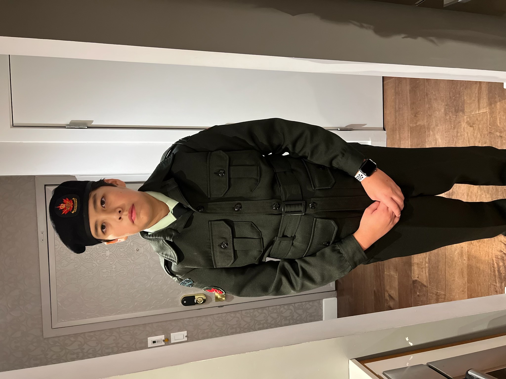
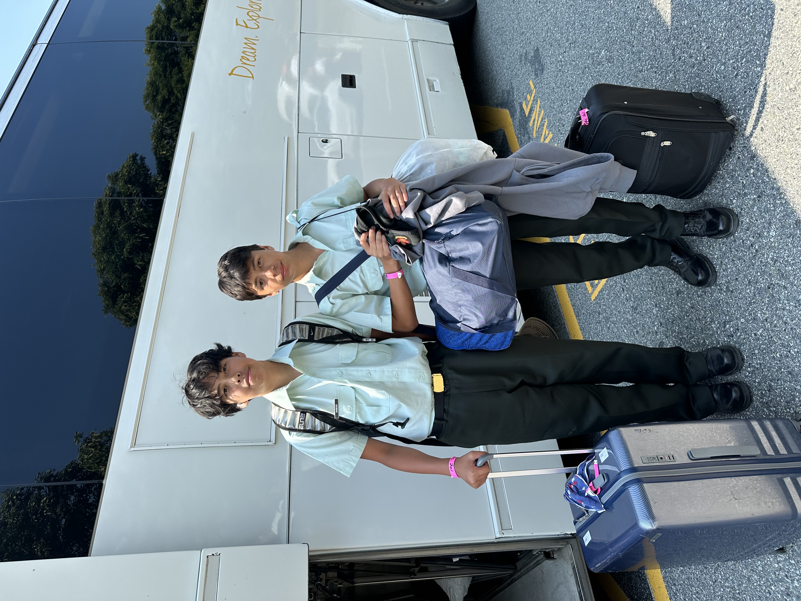
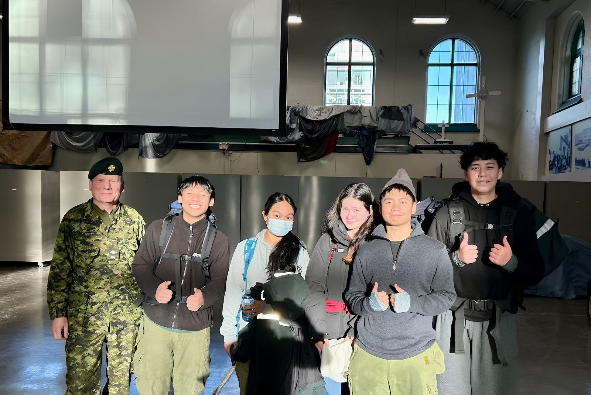
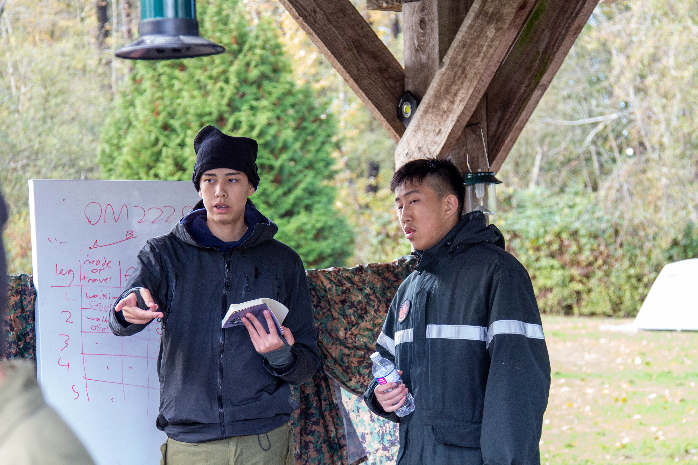
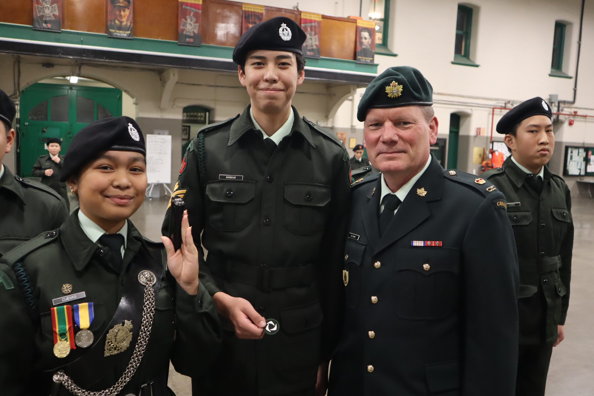
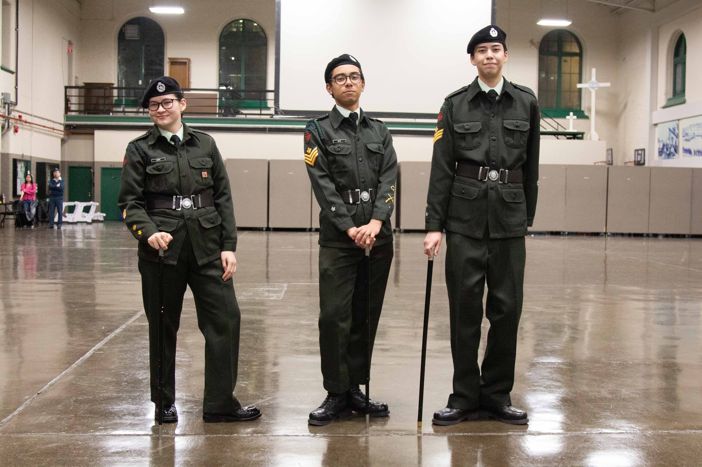

Personal Archive — Cadet Program
Purpose
I am creating this archive to document and preserve the experiences, growth, and memories from my years as a cadet.
This archive spans 4 years and covers training, achievements, friendships, and the personal development that came with the program. Items are organized chronologically so the progression of the journey is clear.
How to View This Archive
01 —
Scroll through the timeline from top to bottom. Each entry represents a moment or milestone in chronological order.
02 —
Each item includes a date, a label, and a short explanation of why it matters to the overall story.
03 —
After the timeline, read the reflection section to understand what this journey meant and what it reveals about growth over time.
Timeline of Records
Brandon Barbour — First training night in uniform — First step of a long journey
This picture is the starting point of my cadet journey. It was the first time I put on my uniform, and it represents the moment I officially became part of the team. Looking back at this photo, I'm reminded of how nervous but excited I was to take on new responsibilities. This image is the foundation of my archive because it captures the beginning of my growth, the friendships I've made, and the pride I take in wearing this uniform.

Brandon Barbour, Vytes Rosales — Coming home from two weeks of summer camp — The end of a grueling but rewarding camp
This photo captures the exact moment I got back from two weeks of summer camp, about a year and a half after joining. Honestly, I was completely exhausted from the long days, but I also felt a massive sense of accomplishment. I had made many friends along the way and learned lots, growing as a person.

Brandon Barbour, Cesarius Villiones, Tiffany Adams, MWO Cueves, WO Delion, Major Blomme — Coming home from a two-night winter FTX — Pushing through the cold together
This photo was taken after a two-night winter FTX where we had to set up our own shelter and cook our own food. It was cold and grueling, but pushing through made me closer with my friends and helped me grow as a person.

Brandon Barbour — Planning a navigation activity on a fall FTX — Learned what it takes to lead
This picture was taken on a fall FTX where I was put in a leadership role of planning a navigation activity. Planning the activity turned out to be incredibly difficult because of all the things you have to consider, but the activity actually turned out pretty good. Planning this and taking on the leadership role helped me grow as a leader and as someone who thinks about other people.

Brandon Barbour, RSM Cueves, Major Blomme — Receiving a rank promotion — Payoff of hard work
This was taken with the CO and RSM of my cadet corps as I received a rank promotion. This marked a milestone it had taken a long time and lots of effort going out of my way to be as helpful as I could. This night was one I won't forget after all my hard work paid off.

Brandon Barbour, Adrian Matic, Tiffany Adams — Last night with friends who aged out — The end of an era
This day was the last time I saw my friends as they aged out and left the program. I had gone through many hardships with these people over the years. It was honestly sad, but there's no point in dwelling on that I just thought about all the good memories we made together and how much they shaped who I became.

Reflection
"The hardest part of growing up is watching the people who helped you get there move on."
Looking at this archive, the main story is steady growth. From nervously putting on my uniform for the first time in January 2023 to saying goodbye to friends who aged out in 2026, every item shows a moment where I stepped outside my comfort zone. It proves that I value perseverance, because the focus isn't on the struggle, but how I overcame it.
However, this archive is not a complete picture. It captures major milestones, but it leaves out ordinary Tuesday night drills, the times things went wrong, and the quiet moments that do not make for a good photo. Viewers see my pride in my rank, friendships, and leadership, but they miss the routine weekly effort it took to get there.
This gap is true for historical records in general because archives are always selective. Someone looking at this collection twenty years from now will understand the structure of the cadet program, but they only see the version of events I chose to save. Every archive reflects the priorities of its creator, making it an argument about what matters. That is exactly what makes archives both useful and incomplete as historical sources.
Sources & Permissions
Item 01
Photograph of Brandon Barbour in uniform for the first time. January 12, 2023. Personal collection of Brandon Barbour. Permission granted by subject.Item 02
Photograph of Brandon Barbour and Vytes Rosales returning from summer camp. August 10, 2024. Personal collection of Brandon Barbour. Permission granted by subjects.Item 03
Photograph of Brandon Barbour during a fall FTX navigation leadership activity. November 1, 2025. Personal collection of Brandon Barbour. Permission granted by subject.Item 04
Photograph of Brandon Barbour receiving a rank promotion alongside RSM Cueves and Major Blomme. November 27, 2025. Personal collection of Brandon Barbour. Permission granted by all subjects pictured.Item 05
Photograph of Brandon Barbour, Cesarius Villiones, Tiffany Adams, MWO Cueves, WO Delion, and Major Blomme after a two-night winter FTX. December 1, 2025. Personal collection of Brandon Barbour. Permission granted by all subjects pictured.Item 06
Photograph of Brandon Barbour, Adrian Matic, and Tiffany Adams on the last night before friends aged out of the program. February 5, 2026. Personal collection of Brandon Barbour. Permission granted by all subjects pictured.